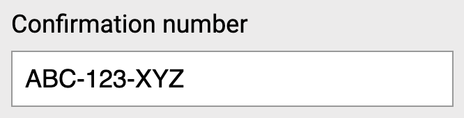

The readonly and aria-readonly attributes both tell users that a value cannot be changed. However, they work in different ways.
The readonly attribute
The readonly attribute is used for form controls that have a value users would normally be able to edit.
It prevents users from changing that value, while still allowing them to focus the control, read the value, select it and copy it.

In the following example, the boolean readonly attribute has been used. Users cannot change the value "ABC-123-XYZ", but the value is still submitted with the form.
<label for="order-id">Order ID</label>
<input
id="order-id"
value="ABC-123-XYZ"
readonly
>A useful way to think about readonly is:
The value is still there for users. They just can't change it.
It applies to controls where users normally enter a value. The value remains available for them to inspect, select or copy, but users cannot edit it.
Because readonly is built into HTML, browsers automatically expose the read-only state through accessibility APIs. There is no need to add ARIA.
When to use readonly
The readonly attribute can be useful when a field has information that users need to see but should not be able to change.
For example:
- an order number
- a calculated total
- information confirmed during an earlier step
- information supplied by another system
It is particularly useful when users may still need to focus the field, read the value or copy it.
Which elements support readonly?
The readonly attribute can be used with <textarea> and with text-based <input> types, including:
textsearchtelurlemailpassworddatemonthweektimedatetime-localnumber
In the following example, the <textarea> has been set to read-only:
<label for="notes">Notes</label>
<textarea id="notes" name="notes" readonly>
Prefilled content the user can read but not edit.
</textarea>It does not apply to controls such as checkboxes, radio buttons, range controls, colour inputs or buttons.
These controls are about making a choice or performing an action rather than editing a value in the same way as a text field.
The same applies to <select>.
A <select> gives users a set of choices. They choose an option rather than enter or edit text, so there is no editable text value for readonly to preserve.
The aria-readonly attribute
aria-readonly provides a similar read-only state for ARIA widgets.
In the following example, an element has been given aria-readonly="true":
<div
role="textbox"
aria-readonly="true"
aria-label="Confirmation code"
>
ABC-123-XYZ
</div>The attribute tells assistive technologies that the widget cannot be edited, but users can still interact with it in other ways.
It accepts two values:
aria-readonly="true"
aria-readonly="false"true means the value cannot be changed.
false means the value can be changed and is the default, so it usually does not need to be set explicitly.
aria-readonly does not create behaviour
There is an important difference between readonly and aria-readonly.
Native readonly actually prevents users from editing the control. aria-readonly does not.
ARIA communicates information to assistive technologies. It does not automatically change how a custom control behaves.
In the following example, aria-readonly="true" does not, by itself, prevent the content from being edited.
<div
role="textbox"
contenteditable="true"
aria-readonly="true"
aria-label="Comment"
>
Some text
</div>If you create a custom widget, you must also provide the behaviour that prevents users from changing its value.
Otherwise, screen reader users could be told that a control is read-only while the control can still be edited.
When to use aria-readonly
Use aria-readonly when you are creating a custom ARIA widget that supports a read-only state and there is no suitable native HTML equivalent.
For example:
<div
role="textbox"
aria-readonly="true"
aria-label="Confirmation code"
>
ABC-123-XYZ
</div>If the widget later becomes editable, the state could be changed dynamically:
<div
role="textbox"
contenteditable="true"
aria-readonly="false"
aria-label="Comment"
>
</div>Where possible, native HTML is still the best solution. For a standard text field or textarea, use the native readonly attribute instead.
Which roles support aria-readonly?
aria-readonly can be used with roles that support a read-only state, including:
checkboxcomboboxgridgridcelllistboxradiogroupsliderspinbuttontextbox
It is also inherited by some related roles, including:
columnheaderrowheadersearchboxswitchtreegrid
This means aria-readonly is broader than the native HTML readonly attribute.
Some of these roles, such as checkbox, slider and switch, do not have an editable text value. For these roles, aria-readonly="true" means that users cannot change the current state or selection.
Grid and treegrid work a little differently
grid and treegrid behave a bit differently again. Setting aria-readonly="true" on the grid or treegrid element itself propagates down to its gridcell, columnheader and rowheader children, so you don't need to set it on every cell individually.
For grid and treegrid roles, aria-readonly="true" can be set on the parent element. The read-only state then applies to its cells and headers.
<div role="grid" aria-readonly="true">
<div role="row">
<div role="gridcell">Value 1</div>
<div role="gridcell">Value 2</div>
</div>
</div>Individual cells can still use aria-readonly="false" if they need to remain editable.
Don't add aria-readonly to native read-only fields
This is unnecessary. The native readonly attribute already provides both the behaviour and the accessibility information.
<input
type="text"
value="ABC-123-XYZ"
readonly
aria-readonly="true"
>Wrapup
Use native HTML whenever possible.
For native text fields and textareas, readonly provides both the read-only behaviour and the accessibility information.
For custom ARIA widgets, aria-readonly="true" communicates the read-only state to assistive technologies, but you must provide the actual behaviour yourself.